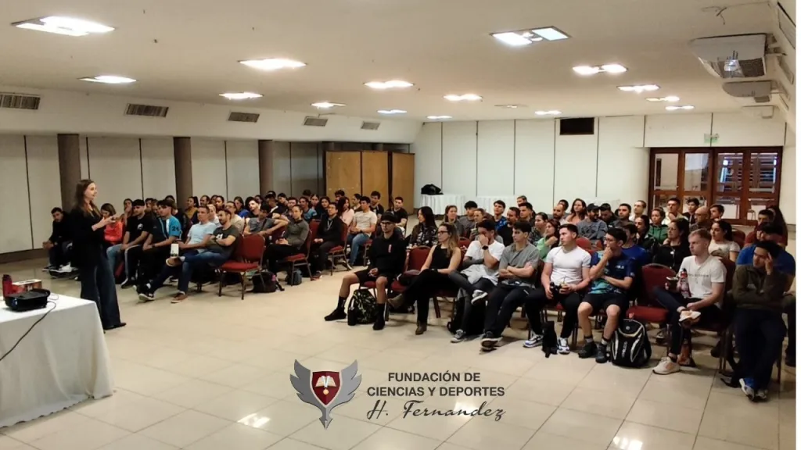
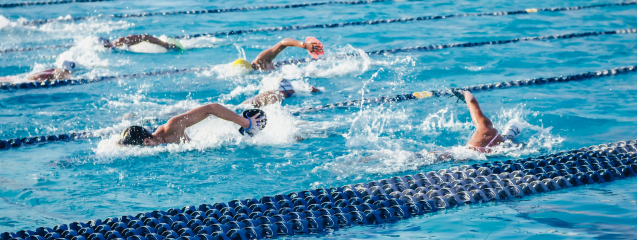

.png)

Quiénes somos
La Fundación de Ciencias y Deportes “H. Fernandez” (Persona Jurídica N° A-4663) nació de la intensa labor desarrollada desde 2015 con el Centro de Capacitación orientado a la Investigación y Alto Rendimiento (Nº de R. SPEPM 127/15) y el Centro de Capacitación en Enseñanza de las Ciencias (Nº de R. SPEPM 160/17). Ambos centros han impartido más de 173 cursos y realizado 1.380 encuentros presenciales en más de cinco provincias de Argentina, tanto en sus Capitales como en el interior, logrando de esta manera cumplir nuestro objetivo de la descentralización de la Educación para la lograr la formación de nuevos Instructores, Técnicos y Entrenadores deportivos. Además, hemos organizado Jornadas Virtuales de Capacitación con Nº de Resoluciones Ministeriales, permitiendo de esta manera reconocer a los Docentes que se capacitan con nosotros. La fundación ha firmado convenios con centros, instituciones y universidades de alto prestigio nacional e internacional extendiendo nuestros programas a nuevos países como Paraguay, Uruguay, Brasil y Estados Unidos, con el objetivo de continuar satisfaciendo las necesidades de los profesionales y futuros profesionales de las ciencias y el deporte. Gracias a estos esfuerzos, se ha logrado capacitar a un total de más de 5.000 personas en la actualidad.
Departamentos

Departamento de Ciencias
Desde el inicio de nuestras actividades, hemos llevado a cabo una amplia gama de cursos, jornadas y seminarios que han impactado positivamente a numerosos profesionales.

Departamento de Deportes
Es un área dedicada a la capacitación en el ámbito del Alto Rendimiento, así como en la Actividad Física y Salud. Desde su fundación en el año 2018, nuestro Departamento ha sido un referente en la formación de profesionales del deporte.